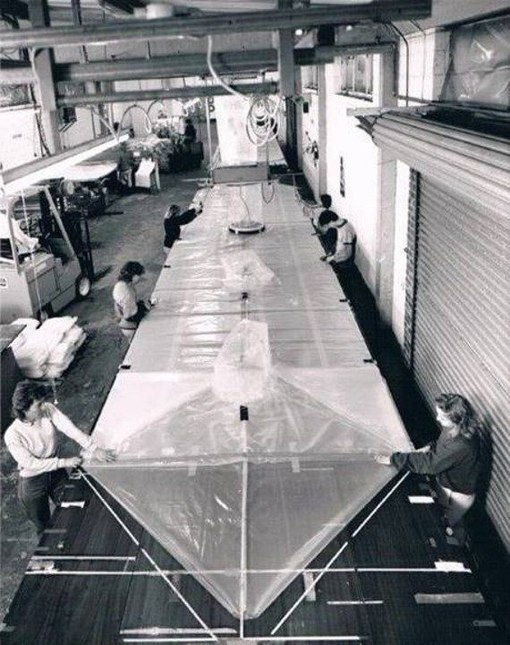
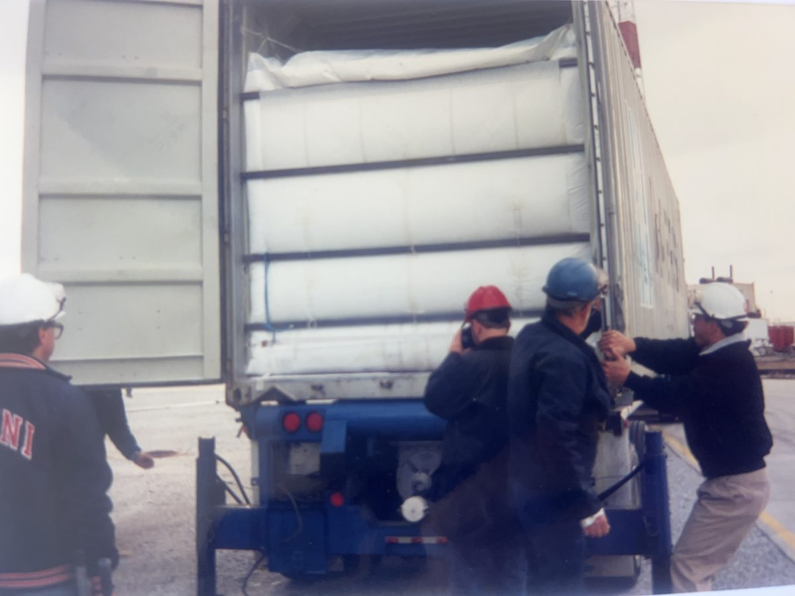
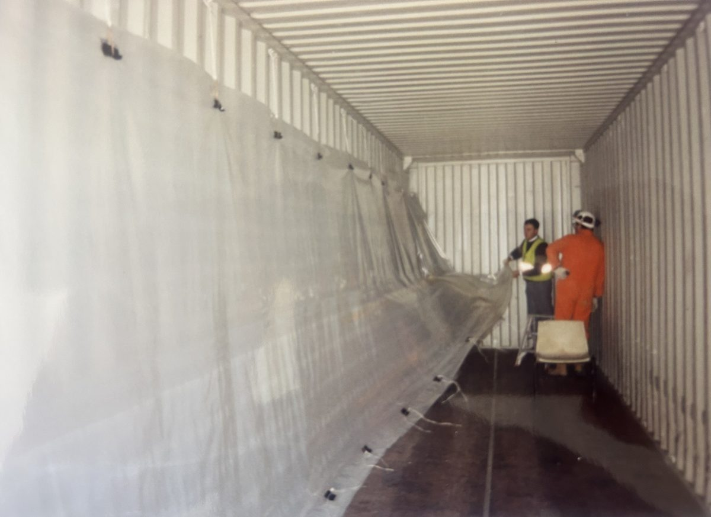

Since 1969
57 years of bulk packaging engineering
PPC Philton has manufactured dry bulk container liners, flexitanks and bespoke industrial packaging since 1969 — among the first UK converters in our category to achieve ISO 9001 accreditation, and still family to the same manufacturing discipline today.
Our story
Guided by science, not slogans
Founded in 1969 and headquartered near London, PPC Philton has grown into a multinational manufacturer of bulk container liners, flexitanks and industrial packaging, with production facilities in the UK, China and India. We were among the first companies in our category globally to achieve ISO 9001 accreditation, maintained continuously since 1989.
The photograph on the right shows our Canvey Island production facility in 1974 — the same site, expanded and modernised many times since, still anchors our UK manufacturing today.
Timeline
Key milestones
Company founded
Philton Polythene Converters Ltd established, manufacturing from our original Canvey Island, Essex facility.
ISO 9001 accreditation
Among the first companies globally to achieve ISO 9001 for dry bulk container liners and flexitanks — maintained continuously ever since.
ISO 14001 certification
Environmental management system certification awarded, formalising our approach to responsible manufacturing.
Flexitank testing platform introduced
Built our proprietary Flexitank Testing Platform in-house, simulating real transport motion to pressure-test every unit before it ships.
Bladder Tanks & Agriculture launched
Our newest product family extends flexible packaging expertise into on-site water, fuel and fertiliser storage.
From our archives
Hands-on from day one
Long before automated lines and an in-house testing platform, the job looked like this — and the hands-on installation support hasn't changed.


Manufacturing
Automated production, in-house testing
Every product is manufactured in our own facilities in the UK, China and India, using automated, touchscreen-controlled production lines and in-house laboratories — including a proprietary flexitank testing platform that simulates real transport conditions.
What guides us
Guided by science, winning with affordable quality
Certified, not claimed
Every quality statement is backed by an accreditation someone else audits — ISO 9001, 14001, 22000 and PAS1008:2016.
Made by us, not resold
Every product is engineered and manufactured in our own facilities — full control over material, tolerance and lead time.
Technical people, not a call centre
Regional contacts across 20+ countries who understand the product range, not a generic support queue.
Want to know more about how we work?
Explore our quality certifications and approach to sustainability.